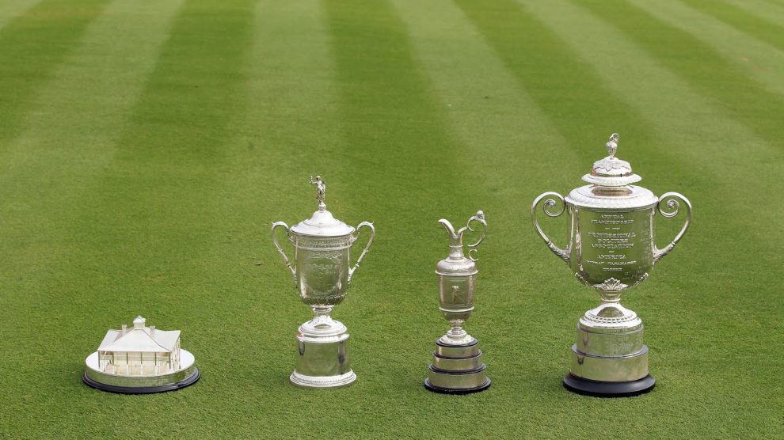

Also Known as the Grand Slam
The Grand Slam in professional golf is winning all of golf's major championships in the same calendar year. Variations include a Career Grand Slam: winning all of the major tournaments within a player's career and the Tiger Slam: winning four consecutive major titles but not in the same calendar year (named after Tiger Woods, the only player to accomplish the feat). Prior to the creation of the Masters Tournament, the national amateur championships of the U.S. and the UK were considered major championships. During that earlier era, the Grand Slam comprised consecutive victories at the United States Amateur Championship, The Amateur Championship (British Amateur) along with the U.S. Open and the Open Championship. Only Bobby Jones completed a Grand Slam, in 1930. No man has ever achieved a modern era Grand Slam.
